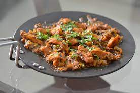

Chicken_Tawa

About Chicken Tawa
This is a popular street food that is made on large Tawas/a Cast Iron flat or concave round shaped pan usually used for making Rotis/Chapatis. You can of course use a frying pan.
Ingredients
- Gram flour
- lemon
- Ginger
- Garlic
- Turmeric
- coriander
- Fennel Seeds
- Cumin Seeds
- Namak Shamak
Steps
- Coat and marinade the Chicken in the paste for 1 hour.
- Cook Chicken in oil for 3 minutes each side. Remove and set aside.
- For the curry base, heat oil and add Fenugreek Seeds, and Onions. Cook until golden brown.
- Add Ginger and Garlic and cook for 1 minute before pouring in the tomatoes.
- Add ground Spices and cook for 3 – 4 minute
- Add the Chicken and cook covered on medium low for 2 – 3 minutes.
- This recipe is delicious served with Plain/Garlic Naan or 2 ingredient Naan, Rotis or Jeera Rice